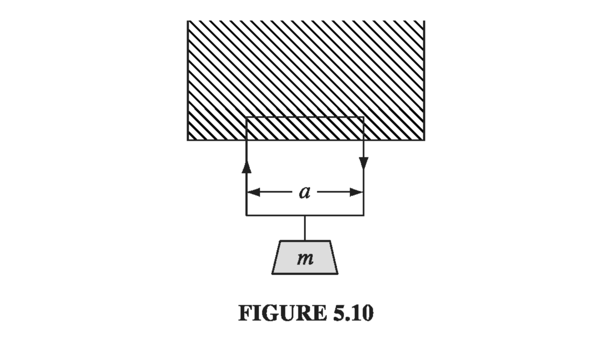

5.1: The Lorentz Force Law#
5.1.1: Magnetic Fields#
Remember the basic problem of classical electrodynamics: We have a collection of charges \( q_1, q_2, q_3, \ldots \) (the “source” charges), and we want to calculate the force they exert on some other charge \(Q\) (the “test” charge). According to the principle of superposition, it is sufficient to find the force of a single source charge - the total is then the vector sum of all the individual forces. Up to now, we have confined our attention to the simplest case, electrostatics, in which the source charge is at rest (though the test charge need not be). The time has come to consider the forces between charges in motion.

To give you some sense of what is in store, imagine that I set up the following demonstration: Two wires hang from the ceiling, a few centimeters apart; when I turn on a current, so that it passes up one wire and back down the other, the wires jump apart - they evidently repel one another (Fig. 5.2(a)). How do we explain this? You might suppose that the battery (or whatever drives the current) is actually charging up the wire, and that the force is simply due to the electrical repulsion of like charges. But this is incorrect. I could hold up a test charge near these wires, and there would be no force on it, for the wires are in fact electrically neutral. (It’s true that electrons are flowing down the line - that’s what a current is - but there are just as many stationary plus charges as moving minus charges on any given segment.) Moreover, if I hook up my demonstration so as to make the current flow up both wires (Fig. 5.2(b)), they are found to attract! What’s going on here?
Whatever force accounts for the attraction of parallel currents and the repulsion of anti-parallel ones is not electrostatic in nature. It is our first encounter with a magnetic force. Whereas a stationary charge produces only an electric field \(\vec{E}\) in the space around it, a moving charge generates, in addition, a magnetic field \(\vec{B}\). In fact, magnetic fields are a lot easier to detect, in practice - all you need is a Boy Scout compass. How these devices work is irrelevant at the moment; it is enough to know that the needle points in the direction of the local magnetic field. Ordinarily, this means north, in response to the earth’s magnetic field, but in the laboratory, where typical fields may be hundreds of times stronger than that, the compass indicates the direction of whatever magnetic field is present.

Now, if you hold up a tiny compass in the vicinity of a current-carrying wire, you quickly discover a very peculiar thing: The field does not point toward the wire, nor away from it, but rather it circles around the wire. In fact, if you grab the wire with your right hand-thumb in the direction of the current-your fingers curl around in the direction of the magnetic field (Fig. 5.3). How can such a field lead to a force of attraction on a nearby parallel current? At the second wire, the magnetic field points into the page (Fig. 5.4), the current is upward, and yet the resulting force is to the left! It’s going to take a strange law to account for these directions.
5.1.2: Magnetic Forces#
In fact, this contribution of directions is just right for a cross product: the magnetic force on a charge \(Q\), moving with velocity \(v\) in a magnetic field \(\vec{B}\) is
This is known as the Lorentz force law. In the presence of both electric and magnetic fields, the net force on \(Q\) would be
I do not pretend to have derived (292), of course; it is a fundamental axiom of the theory, whose justification is to be found in experiments such as those I described in the previous section.
Our main job now is to calculate the magnetic field \(\vec{B}\) (and for that matter the electric field \(\vec{E}\) as well; the rules are more complicated when the source charges are in motion). But before we proceed, it is worthwhile to take a closer look at the Lorentz force law itself; it is a peculiar law, and it leads to some truly bizarre particle trajectories.
Example 5.1: Cyclotron Motion#
We have a charged particle moving in a constant magnetic field. What is the general form of the trajectory?
The archetypical motion of a charged particle in a magnetic field is circular, with the magnetic force providing the centripetal acceleration. In Fig 5.5, a uniform magnetic field points into the page; if the charge \(Q\) moves counterclockwise, with speed \(v\), around a circle of radius \(R\), the magnetic force points inward, and has a fixed magnitude \(QvB\) - just right to sustain uniform circular motion:
where m is the particle’s mass, and \( p = mv \) is its momentum. Equation (294) is known as the cyclotron formula because it describes the motion of a particle in a cyclotron - the first of the modern particle accelerators. It also suggests a simple experimental technique for finding the momentum of a charged particle: send it through a region of known magnetic field, and measure the radius of its trajectory. This is in fact the standard means for determining the momenta of elementary particles.
I assumed that the charge moves in a plane perpendicular to \( \vec B \). If it starts out with some additional speed \( v_{\parallel} \) parallel to \( \vec B \) , this component of the motion is unaffected by the magnetic field, and the particle moves in a helix (Fig 5.6). The radius is given by Eq 5.3, but the velocity in question is now the component perpendicular to \( \vec B \), \( v_{\perp} \)
Example 5.2: Cycloid Motion#
A more exotic trajectory occurs if we include a uniform electric field, at right angles to the magnetic one. Suppose, for instance, that \(\vec{B}\) points in the \(x\)-direction, and \(\vec{E}\) in the \(z\)-direction, as shown in Fig. 5.7. A positive charge is released from the origin; what path will it follow?
Let’s think it through qualitatively, first. Initially, the particle is at rest, so the magnetic force is zero, and the electric field accelerates the charge in the \(z\)-direction. As it picks up speed, a magnetic force develops which, according to equation (292), pulls the charge around to the right. The faster it goes, the stronger \( F_{B} \) becomes; eventually, it curves the particle back around towards the \(y\) axis. At this point the charge is moving against the electrical force, so it begins to slow down - the magnetic force then decreases, and the electrical force takes over, bringing the particle to rest at point \(a\), in Fig. 5.7. There the entire process commences anew, carrying the particle over to point \(b\), and so on.
Now let’s do it quantitatively. There being no force in the \(x\)-direction, the position of the particle at any time \(t\) can be described by the vector \( (0, y(t), z(t) ) \); the velocity is therefore
Thus,
and hence, applying Newton’s second law,
Treating the \(\hat{y}\) and \(\hat{z}\) components separately,
Let’s define a frequency
(This is the cyclotron frequency, at which the particle would revolve in the absence of any electric field.) Then the equations of motion take the form
We’re left with a straightforward ODE, with solution
But the particle started from rest \(( \dot{y}(0) = \dot{z}(0) = 0 ) \) at the origin \( ( y(0) = z(0) = 0) \); these four conditions determine the constants \( C_1, C_2, C_3, C_4 \):
In this form, the answer is not terribly enlightening, but if we let
and eliminate the sines and cosines by exploiting the trigonometric identity \( \sin ^2 \omega t + \cos ^2 \omega t = 1 \), we find that
This is the formula for a circle, of radius \(R\), whose center \( (0, R \omega t, R) \) travels in the \(y\)-direction at constant speed
The particle moves as though it were a spot on the rim of a wheel rolling along the y-axis. The curve generated in this way is called a cycloid. Notice that the overall motion is not in the direction of \(\vec{E}\), as you might suppose, but perpendicular to it.
Example 5.2b: Mass Spectrometer#
Mass Spectrometer
Suppose we have particles of several isotopes of a known element, and we wish to know exactly which mass isotopes are present (and separate them out) A mass spectrometer is an instrument which can measure the masses and relative concentrations of atoms and molecules. It makes use of the basic magnetic force on a moving charged particle. First, we ionize the particle, giving it a known net charge. We accelerate the particles through a known voltage into a constant magnetic field perpendicular to the velocity of the particle. The charged particles now undergo cyclotron motion (as we just described) of radius given by
We know that the energy per unit charge imparted by our known voltage difference is
We can measure the radius of the cyclotron motion by simply putting a detector wall 1/2 of the way around the circular motion, such that the ions will strike the detector a distance \( 2R \) from the output nozzle of the accelerating voltage. Putting our known quantities \(( \Delta V, B )\) together with the measured radius of the cyclotron motion, we get
One implication of the Lorentz force law deserves special attention:
Magnetic forces do no work
For the magnetic force is, by definition, always perpendicular to the path of motion. Magnetic forces may alter the direction in which a particle moves, but they cannot speed it up or slow it down. The fact that magnetic forces do no work is an elementary and direct consequence of the Lorentz force law, but there are many situations where it appears so manifestly false that one’s confidence is bound to waver. When a magnetic crane lifts the carcass of a junked car, for instance, something is obviously doing work, and it seems perverse to deny that the magnetic force is responsible. Well, perverse or not, deny it we must, and it can be a very subtle matter to figure out who does deserve the credit in such circumstances. We’ll see a cute example in the next section, but the full story will have to wait until we hit the key conservation laws much later.
5.1.3: Currents#
The current in a wire is the charge per unit time passing a given point. By definition, negative charges moving to the left count the same as positive ones to the right. This conveniently reflects the physical fact that almost all phenomena involving moving charges depend on the product of charge and velocity - if you reverse the signs of \(q\) and \(v\), you get the same answer, so it doesn’t really matter which you have. (The Lorentz force law is a case in point; the Hall effect (Prob. 5.41) is a notorious exception.) In practice, it is ordinarily the negatively charged electrons that do the moving - in the direction opposite to the electric current. To avoid the petty complications this entails, I shall often pretend it’s the positive charges that move, as in fact everyone assumed they did for a century or so after Benjamin Franklin established his unfortunate convention. Current is measured in coulombs-per-second, or amperes (A):

A line charge \( \lambda \) traveling down a wire at speed \(v\) (Fig 5.9) constitutes a current
because a segment of length \( v \Delta t \), carrying charge \( \lambda v \Delta t \), passes point P in a time interval \( \Delta t \). Current is actually a vector
Because the path of the flow is dictated by the shape of the wire, one doesn’t ordinarily bother to display the direction of \(\vec{I}\) explicitly, but when it comes to surface and volume currents we cannot afford to be so casual, and for the sake of notational consistency it is a good idea to acknowledge the vectorial character of currents right from the start. A neutral wire, of course, contains as many stationary positive charges as mobile negative ones. The former do not contribute to the current-the charge density \( \lambda \) in equation (303) refers only to the moving charges. In the unusual situation where both types move, \( \vec{I} = \lambda_{+} \vec{v}_{+} + \lambda_{-}\vec{v}_{-} \).
The magnetic force on a segment of current-carrying wire is
Inasmuch as \( \vec{I} \) and \( \mathrm{d}\vec{l}\) both point in the same direction, we can just as well write this as
Typically, the current is constant (in magnitude) along the wire, and in that case, I comes outside the integral:
Example 5.3#
A rectangular loop of wire, supporting mass \(m\), hangs vertically with one end in a uniform magnetic field \(\vec{B}\), which points into the page in the shaded region of Fig 5.10. For what current \(I\), in the loop, would the magnetic force upward exactly balance the gravitational force downward?

First of all, the current must circulate clockwise, in order for \( (\vec{I} \times \vec{B}) \) in the horizontal segment to point upward. The force is
where \(a\) is the width of the loop. The magnetic forces on the two vertical segments cancel. For \( F_{mag} \) to balance the weight (\(mg\)), we must therefore have
The weight just hangs there, suspended in mid-air!
What happens if we now increase the current? Then the upward force exceeds the downward force of gravity, and the loop rises, lifting the weight. Somebody’s doing work, and it sure looks as though the magnetic force is responsible. Indeed, one is tempted to write
where \(h\) is the distance the loop rises. But we know that magnetic forces never do work, so what’s going on here?
Well, when the loop starts to rise, the charges in the wire are no longer moving horizontally - their velocity now acquires an upward component \(u\), the speed of the loop (Fig 5.11), in addition to the horizontal component \(w\) associated with the current (\( I = \lambda w \)). The magnetic force, which is always perpendicular to the velocity, no longer points straight up, but tilts back. It is perpendicular to the net displacement of the charge (which is in the direction of \(v\)), and therefore it does no work on \(q\). It does have a vertical component (\( q w B \)); indeed, the net vertical force on the charge \( (\lambda a) \) in the upper segment of the loop is
(as before); but now it also has a horizontal component \( (q u B) \) which opposes the flow of current. Whoever is in charge of maintaining that current, therefore, must now push those charges along, against the backward component of the magnetic force.

The total horizontal force on the top segment is
In a time \( dt \), the charges move a (horizontal) distance \( w \mathrm{d} t \), so the work done by this agency (presumably a battery or a generator) is
which is precisely what we naively attributed to the magnetic force in (309). Was work done in this process? Absolutely! Who did it? The battery! What, then, was the role of the magnetic force? Well, it redirected the horizontal force of the battery into the vertical motion of the loop and the weight.

It may help to consider a mechanical analogy. Imagine you’re sliding a trunk up a frictionless ramp, by pushing on it horizontally with a mop (Fig 5.12). The normal force (\(N\)) does no work, because it is perpendicular to the displacement. But it does have a vertical component (which in fact is what lifts the trunk), and a (backward) horizontal component (which you have to overcome by pushing on the mop). Who is doing the work here? You are, obviously - and yet your force (which is purely horizontal) is not (at least, directly) what lifts the box. The normal force plays the same passive (but crucial) role as the magnetic force in Ex 5.3: while doing no work itself, it redirects the efforts of the active agent (you, or the battery, as the case may be), from horizontal to vertical.
When charge flows over a surface, we describe it by the surface current density, \(\vec{K}\), defined as follows: Consider a “ribbon” of infinitesimal width \( \mathrm{d} l_{\perp} \), running parallel to the flow (Fig 5.13). If the current in this ribbon is \( \mathrm{d} \vec{I} \), the surface current density is
In words, \(\vec{K}\) is the current per unit width. In particular, if the (mobile) surface charge density is \( sigma \) and its velocity is \( \vec{v} \), then
In general, \( \vec{K} \) will vary from point to point over the surface, as \( \sigma \) and/or \( \vec{v} \) changes. The magnetic force on the surface current is
Caveat: Just as \(\vec{E}\) suffers a discontinuity at a surface charge, so \(B\) is discontinuous at a surface current. In (314), you must be careful to use the average field, just as we did in Sect 2.5.3.
When the flow of charge is distributed throughout a three-dimensional region, we describe it by the volume current density, \(\vec{J}\), defined as follows: consider a “tube” of infinitesimal cross section \( \mathrm{d} a_{\perp} \), running parallel to the flow (Fig 5.14). If the current in this tube is \( \mathrm{d} \vec{I} \), the volume current density is
In words, \(J\) is the current per unit area. If the (mobile) volume charge density is \( \rho \) and the velocity is \( \vec{v} \), then
*

The magnetic force on a volume current is therefore
Example 5.4#
A current \(I\) is uniformly distributed over a wire of circular cross section, with radius a (Fig 5.15). Find the volume current density \(J\).

The area perpendicular to the flow is \( \pi a^2 \), so
This was trivial because the current density was uniform
Suppose the current density in the wire is proportional to the distance from the axis,
for some constant \(k\). Find the total current in the wire.
Because \(J\) varies with \(s\), we must integrate (315). The current through the shaded patch (Fig 5.16) is \( J \mathrm{d} a_{\perp} \), and \( \mathrm{d} a_{\perp} = s \mathrm{d} s \mathrm{d} \phi \) so
According to equation (315), the total current crossing a surface \(S\) can be written as
(The dot product serves to pick out the appropriate component of \( \mathrm{d} \vec{a} \)). In particular, the charge per unit time leaving a volume \(V\) is
Because charge is conserved, whatever flows out through the surface must come at the expense of what remains inside:
(The minus sign reflects the fact that an outward flow decreases the charge left in \(V\)). Since this applies to any volume, we conclude that
This is the precise mathematical statement of local charge conservation; it is called the continuity equation.
For future reference, let us summarize the “dictionary” we have implicitly developed for translating equations into the forms appropriate to point, line, surface, and volume currents
This correspondence, which is analogous to \( q \sim \lambda \mathrm{d} l \sim \sigma \mathrm{d} a \sim \rho \mathrm{d} \tau \) for the various charge distributions, generates Eqs. (305), (314), and (317) from the original Lorentz force law ((292)).